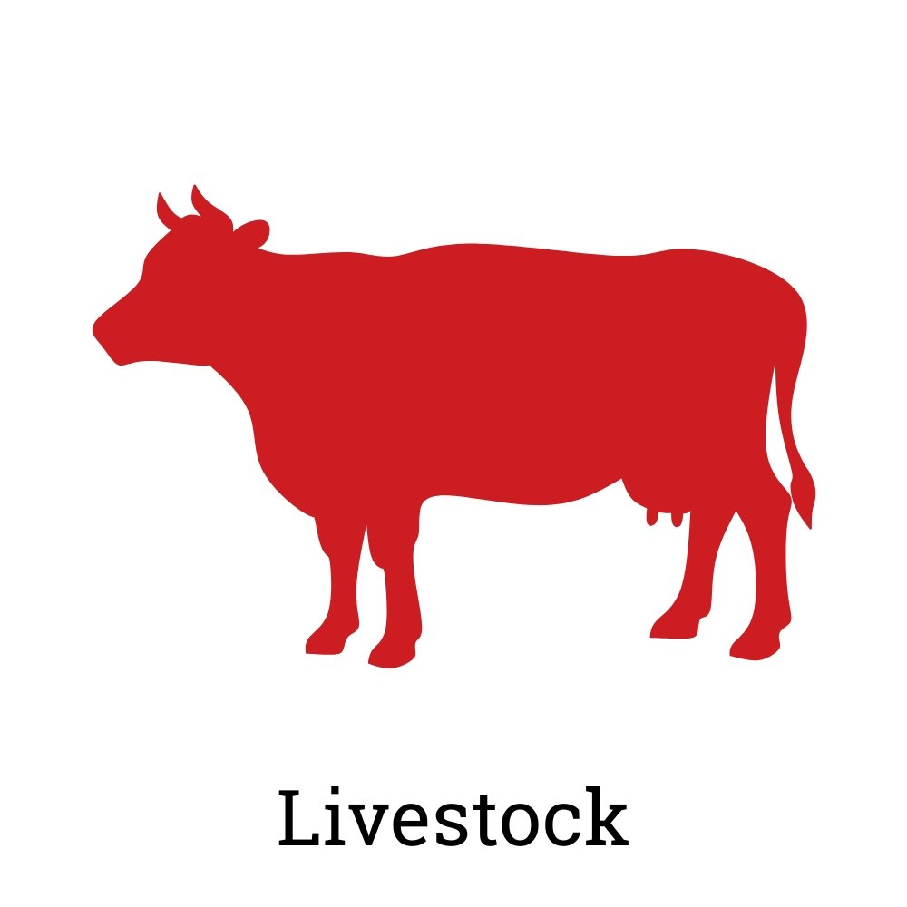
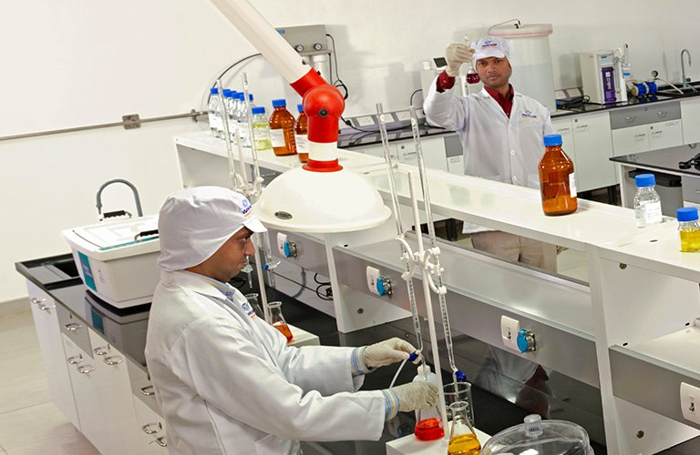
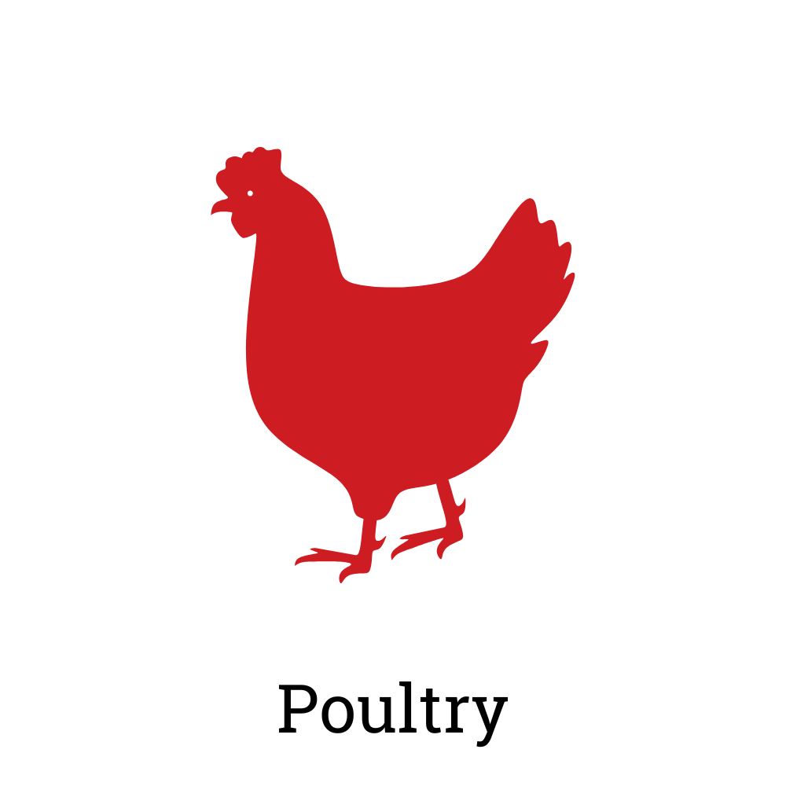
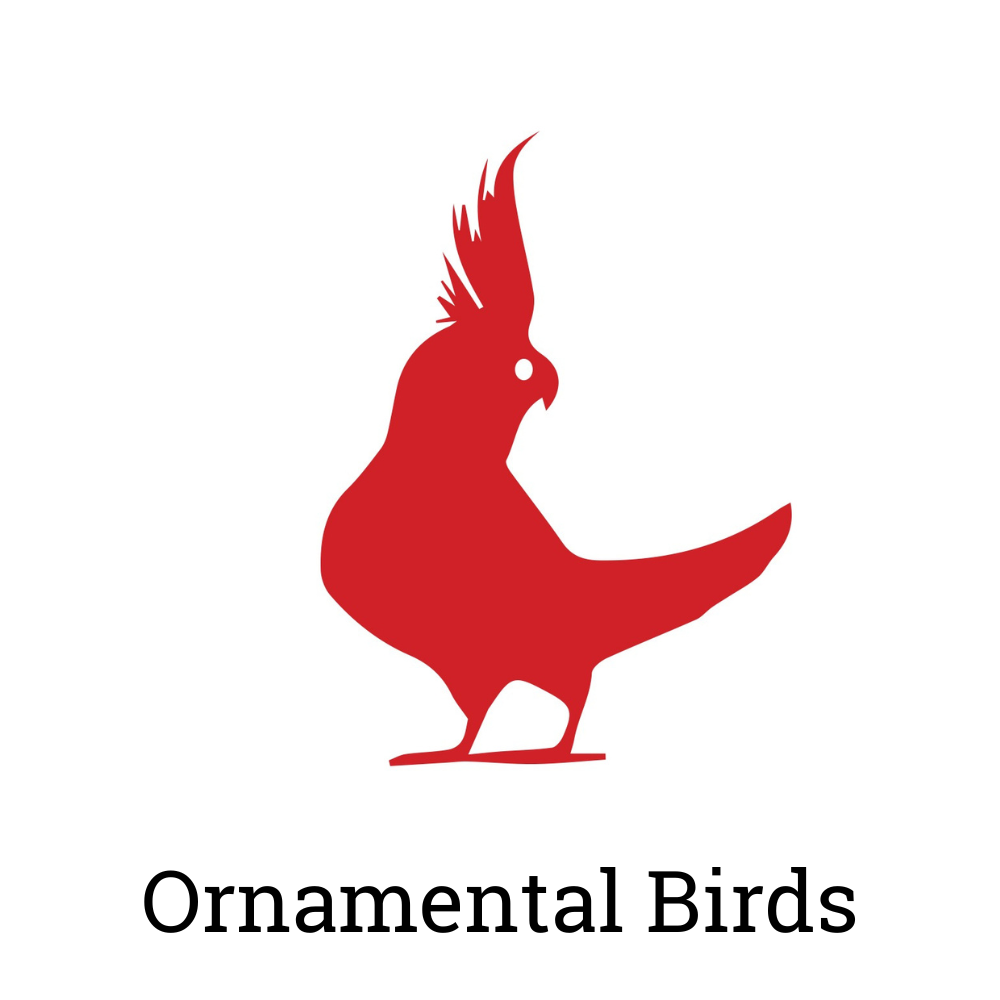
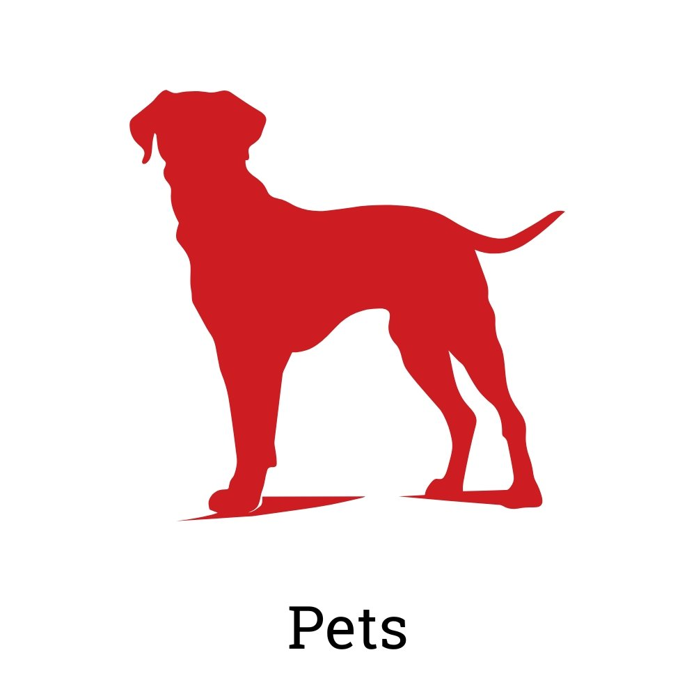

Livestock
Veterinary pharmaceutical solutions for cattle, buffalo, sheep, goats and other farm animals — covering all major therapeutic classes in the Symans portfolio.
83 products listedExplore Livestock →
Symans Pharmaceuticals (Private) Limited
From manufacturing excellence to global distribution — we care for every step. An established, family-owned veterinary pharmaceutical company serving animal health across Pakistan and international markets.
Explore Our Products Discover Symans
Who We Are
Symans is a leading brand in Pakistan's veterinary healthcare industry, built on decades of experience and industry trust. It is a family-owned organization comprising Symans Pharmaceuticals (Private) Limited and Pakistan Medicos.
Symans is dedicated to providing high-quality and reliable pharmaceutical solutions for livestock professionals across Pakistan. With a strong foundation built on experience, innovation, and ethical practices, Symans continues to support the veterinary industry through advanced formulations and a committed team of experts.

Our Heritage
The milestones below are preserved exactly as recorded in the company's own history.
The family's journey in the veterinary sector begins, entering the market through Pakistan Medicos.
Foundation of Symans Pharmaceuticals (Private) Limited, as stated in the company's history.
Symans Pharmaceuticals obtains its drug manufacturing licence.
Registration with the Registrar of Joint Stock Companies, as stated in the company's history.
cGMP certification achieved.
ISO 9001 certification achieved.
Core Capabilities
Seven dedicated production sections, designed, validated and operated in compliance with current Good Manufacturing Practices (cGMP), with appropriate segregation and process controls.
Rigorous monitoring of every stage — from raw materials to final release — verifying identity, purity, potency and stability of every product.
Innovation in animal healthcare, collaborating with industry professionals, academic institutions and research organizations.
Product Categories
We offer a complete range of veterinary products covering all therapeutic classes. Category counts reflect listings on the existing catalogue; many products serve more than one category.

Veterinary pharmaceutical solutions for cattle, buffalo, sheep, goats and other farm animals — covering all major therapeutic classes in the Symans portfolio.
83 products listed
A comprehensive poultry range supporting flock health, productivity and disease control for broilers, layers and breeders.
66 products listed
Specialised healthcare products formulated for ornamental and aviary birds, drawn from the wider Symans veterinary portfolio.
42 products listed
Healthcare solutions for companion animals, developed to the same quality and manufacturing standards as the full Symans range.
19 products listedFeatured Products
Manufacturing & Quality
All manufacturing sections are designed, validated, and operated in compliance with current Good Manufacturing Practices (cGMP), with appropriate segregation and process controls. Symans achieved cGMP certification in 2000 and ISO 9001 certification in 2005.

Market Presence & Global Reach
Symans has a substantial nationwide network of distributors, stockists, wholesalers and retailers, supported by experienced sales & marketing teams and warehousing in Lahore. Internationally, Symans is an established exporter serving markets across Asia and Africa, including Afghanistan, Iraq, Syria, Sri Lanka, Chad and Sudan, with product registrations being pursued in the UAE and Saudi Arabia.
News & Media
Partner With Symans
Whether you are a distributor, a veterinary professional, a business partner or an international export enquirer, our team is ready to assist you with product information, partnership opportunities and support.